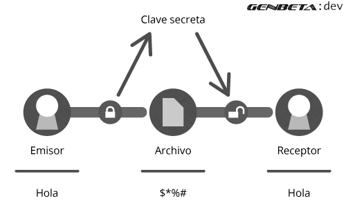

Tipos de Criptografía
La criptografía simétrica solo utiliza una clave para cifrar y descifrar el mensaje, que tiene que conocer el emisor y el receptor previamente y este es el punto débil del sistema, la comunicación de las claves entre ambos sujetos, ya que resulta más fácil interceptar una clave que se ha transmitido sin seguridad.
La criptografía asimétrica se basa en el uso de dos claves:
- la pública (que se podrá difundir sin ningún problema a todas las personas que necesiten mandarte algo cifrado)
- la privada (que no debe de ser revelada nunca).